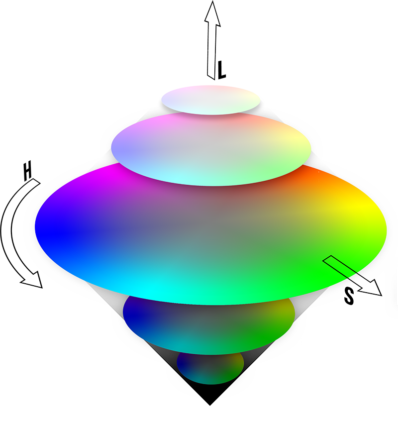
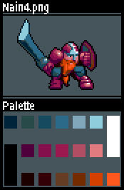
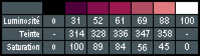
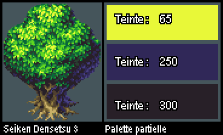
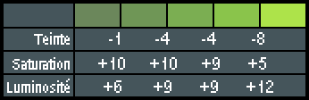

Cours de pixel art 6 : couleurs et palettes
Et non, on ne dessine plus rien ! Heh, revenez !

Pourquoi et quand choisir une palette ?
Bonne question, après tout pourquoi je vous bassine avec ça ? Tout simplement parce que la palette, c'est 50% de la qualité de votre travail (pourcentage réalisé avec pourcentage-maker). Au fil d'un jeu, il est important d'avoir des palettes cohérentes car elles contribuent grandement à installer une ambiance. En règle générale, ce qui fait la différence entre des graphismes beaux et des graphismes ratés, c'est en bonne partie la palette.
« Bon d'accord c'est important d'avoir une jolie palette, je ferai ça à la fin. »
Tututut, surtout pas ! La palette se travaille du début à la fin de la conception d'un pixel art. En ce qui me concerne, c'est la première et la dernière chose que je fais : je commence par déterminer une palette de départ (dans un coin de mon image) que j'arrange au fur et à mesure que j'avance, puis, une fois que tout est fini, je passe un bon moment à l'améliorer. Les améliorations étant essentiellement dues au « feeling », ce que vous allez apprendre ici peut être remis en cause : c'est juste un point de départ.
La magie du système TSL (HSL)
Présentation
En informatique, toutes les couleurs sont représentées par un code hexadécimal (c'est à dire qui utilise les caractères 0 1 2 3 4 5 6 7 8 9 A B C D E F) de 6 caractères. Par exemple, le code #000000 correspond au noir, le #FFFFFF au blanc et le #FF0000 au rouge pur. Rien de très compliqué jusqu'ici.
Ce code peut être divisé en trois segments de deux chiffres (le # sert juste à décorer) : les deux premiers chiffres correspondent à la composante rouge de la couleur, les deux suivants au vert, et les trois derniers au bleu. En combinant les 3 valeurs, on obtient n'importe quelle couleur. Par exemple mon rouge pur de tout à l'heure est #FF0000 car sa composante rouge (FF) est maximale et les deux autres nulles (00).
Les codes hexadécimaux peuvent être convertis en valeurs plus courantes pour faciliter la discussion (tout le monde ne lit pas l'hexadécimal comme vous et moi) : chaque doublet compris entre 00 et FF est en fait un nombre entre 0 et 255.
Imaginons maintenant que j'ai choisi une couleur que je vais utiliser dans mon pixel art, par exemple le violet #6A146A (Rouge 106 — Vert 20 — Bleu 106). Bon, cette couleur est pas mal mais elle ne me convient pas tout à fait…j'aimerais bien quelque chose de plus vif et plus intense. Je me dis donc que pour la rendre plus vive, j'ai juste à augmenter les 3 composantes…pfff tu parles, ça ne fait que la rendre plus blanche et pâle. Tant pis, je vais l'assombrir un peu alors, je vais diminuer chaque composante de 10…encore raté ! J'ai assombri ma couleur mais je la fais tendre vers le gris…aïe aïe. Que c'est compliqué de choisir des couleurs avec précision, laissons tomber les palettes. Et puis Zorro est arrivé. Zorro, c'est le système TSL (HSL).
Vous l'avez surement compris, ce n'est pas naturel pour votre cerveau ni pour le mien de décomposer une couleur en trois composantes RVB (Rouge Vert Bleu). Le système TSL c'est tout simplement une autre façon d'identifier une couleur : on n'utilise plus les composantes RVB mais trois composantes visibles et reconnaissables à l'œil nu, à savoir la Teinte, la Saturation et la Luminosité.
La teinte, comprise entre 0 et 360, c'est tout simplement la couleur en elle même : rouge (0), jaune(60), vert(120), cyan(180), bleu(240), rose(300) et rouge (360). Si vous êtes observateur, vous aurez remarqué que les deux extrêmes se rejoignent (comme en politique). Bien évidemment, toutes les teintes intermédiaires, entre les couleurs que j'ai citées, existent.
La saturation, comprise entre 0 et 100, est la vivacité de la couleur. Plus une couleur est saturée, plus elle est intense. Une saturation de 0 correspond à un gris.
Enfin la luminosité, comprise entre 0 et 100, est la plus simple à comprendre : elle détermine si la couleur tend vers le blanc ou le noir.
Voici pour fixer vos idées une jolie représentation de l'espace colorimétrique HSL, généreusement fournie par Alexandre Van de Sande :

Tous les logiciels de pixel art présentés dans le chapitre 1 vous permettent de choisir vos couleurs avec le système TSL, donc vous n'avez aucune raison de ne pas l'utiliser. Avec un peu d'entrainement, vous pourrez très facilement obtenir une couleur à laquelle vous « pensez », tandis que cela aurait pris des heures en utilisant le système RVB.
Les rampes et les glissés de teinte
Maintenant que vous connaissez les outils à votre disposition pour choisir une couleur, entrons dans le vif du sujet : la constitution d'une palette. Une palette est constituée de plusieurs "rampes" : une rampe c'est un groupe de couleurs dont les teintes sont voisines.
Par exemple, une palette peut contenir une rampe de rouges, une rampe de verts et une rampe de marrons. J'ai déjà pas mal blablaté dans ce cours alors allons y pour un exemple.

Voici un pixel art de nain barbu (pas terrible mais ça fera l'affaire pour illustrer) et en dessous, la palette qui a servi à le réaliser. Cette palette contient trois rampes : une bleue, une rouge et une orange. Petite note en passant, il n'est pas indispensable de mettre en scène votre palette comme je l'ai fait. En général c'est plus bordélique que ça.
Sur chaque rampe, j'ai classé les couleurs de la plus foncée (à gauche) à la plus claire (à droite). Remarquez que le blanc pur et le noir pur (les grands rectangles) font partie de deux de mes rampes : étant donné que ces deux couleurs ont une saturation de 0 (le blanc et le noir sont des gris purs), elles peuvent appartenir à n'importe quelle rampe, et c'est le cas de tous les autres gris. Les plus vieux d'entre vous ont peut être déjà vu des images de jeux sur C64 : la palette de couleurs affichables sur cette machine contenait de nombreux gris pour permettre aux artistes de créer des rampes très diverses.
Passons à l'essentiel et intéressons nous au concept fondamental du glissé de teinte (hue-shift). On a souvent tendance à croire que dans une rampe, toutes les couleurs ont la même teinte et la même saturation et que seule la luminosité change (pour avoir des couleurs foncées et claires). Et bien en fait non !
Ce que je ne vous ai pas dit dans le chapitre précédent, c'est que toutes les lumières qui éclairent vos objets sont colorées, soit par le bleu du ciel, soit parce qu'il s'agit du jaune d'une ampoule soit par autre chose encore (l'article proposé en approfondissement du chapitre précédent parle bien de ce sujet). Ainsi, le long d'une rampe, la teinte et la saturation évoluent. Le plus souvent la réalité des choses est très (trop) complexe et demande des connaissances sur l'éclairage que je n'ai pas évoquées (et que je maîtrise assez mal), mais en pixel art on peut se contenter des règles suivantes :
- Plus on va vers le foncé, plus on augmente la saturation
- Plus on va vers le clair, plus on diminue la saturation
- Plus on est dans le foncé, plus la teinte va vers le bleu ou le violet
- Plus on est dans le clair, plus la teinte va vers le jaune
Si l'on regarde en détail la rampe rouge de la palette du nain, on retrouve ces différentes tendances :

Les chiffres parlent d'eux-mêmes, vous pouvez vérifier que tout concorde avec les principes énoncés ci-dessus. A noter, les règles concernant la saturation peuvent être inversées, on obtient alors un rendu plus doux.
Terminons avec un petit exemple de nos amis les professionnels : le très classique « arbre de Seiken Densetsu 3 » dont la palette contient un énorme glissé de teintes du jaune au violet. L'image ci-dessous ne montre pas la palette entière, seulement la couleur la plus claire et les deux plus foncées.

Methode de Xenodrogen
La méthode de Xenodrogen, du nom de son inventeur, est une méthode permettant de choisir avec exactitude les couleurs de votre rampe et sans (trop de) risque vous tromper. Cette méthode n'est pas une règle absolue a respecter mais si vous avez des "gouts de toilettes" en matière de couleur, elle vous permettra de faire de jolies rampes.
Cette méthode repose sur une règle compliquée à formuler mais simple à respecter :
« Au sein d'une rampe, la teinte, la saturation et la luminosité varient en sens unique. Leurs variations (dérivée seconde, pour les matheux) varient elles aussi en sens unique. »
Nous avons déjà parlé de la première phrase, et nous avons même dit dans quel sens devaient varier teinte, luminosité et saturation les uns en fonction des autres.
La seconde phrase va nous permettre de quantifier ces variations : dans une rampe, chacune des composantes (teinte, saturation et luminosité) doit varier soit de plus en plus, soit de moins en moins d'un bout à l'autre de la rampe. Imaginons une rampe de 5 couleurs que l'on va appeler A,B,C,D et E. Je peux par exemple faire +1 en saturation entre A et B, puis +5 entre B et C, encore +5 entre C et D et enfin +12 entre D et E. Ce serait par contre incorrect de faire quelque chose comme +2 +3 +2 +1 +4. Pour résumer, on augmente ou diminue la composante de plus en plus ou de moins en moins mais sans faire de "yoyo".
Allons y pour un petit tableau d'exemple, avec une rampe de verts :

Ici, la teinte diminue de plus en plus, la saturation augmente de moins en moins, et la luminosité augmente de plus en plus.
Remarquez en passant que comme annoncé dans le paragraphe précédent, on peut inverser la relation entre luminosité et saturation pour avoir un rendu doux : sur cette rampe, ce sont les couleurs les plus claires qui sont les plus saturées.
Un dernier détail sur cette méthode de Xenodrogen : plus vous avez de couleurs dans votre rampe, plus vous pouvez faire de petites variations. La rampe de vert du tableau a 5 couleurs donc on a fait de petites variations. Si on avait eu que trois couleurs, on aurait eu des variations de l'ordre de 15–20 unités.
Le bon goût
Noir et blanc
Le problème de l'utilisation du noir et du blanc mérite bien un paragraphe à lui tout seul. Généralement, l'usage de ces deux couleurs à l'état pur (#000000 et #FFFFFF) est déconseillé. Cependant, il existe deux exceptions (une pour chaque couleur) et le nain présenté au début de ce cours est concerné par ces deux exceptions. On peut utiliser du blanc pur (#FFFFFF) sur des surfaces très lumineuses (effets de magies et sortilèges) ou très réfléchissantes (métal, pierres précieuses). C'est le cas du nain et de son armure en métal.
Le cas du noir pur (#000000) est plus subtil : il ne doit servir qu'à faire des contours de sprites et ce pour plusieurs raisons.
- Il ne peut pas servir à faire les ombres car dans la réalité rien n'est jamais parfaitement noir, il y a toujours une teinte très discrète (le plus souvent du violet).
- Il ne doit pas servir à faire des contours dans des décors. Un objet entouré d'un contour noir est particulièrement visible et si l'on veut faire un jeu lisible, ce sont les personnages qui doivent être mis en valeur et pas le décor.
- On peut donc se servir du noir pour faire des contours de sprites, et c'est le cas du nain. Cependant, il est fortement déconseillé de faire des concours noirs "intérieurs" : le noir sépare le sprite du décor mais s'en servir pour séparer les différentes parties du sprite entre elles serait une perte de place et rendrait le sprite brouillon.
Pièges à éviter
Les débutants ont deux tendances à écarter dès que possible, à savoir :
- Utiliser des couleurs trop saturées.
- Utiliser des couleurs trop typées. Rappelez vous que l'herbe n'est pas toujours verte, que l'eau et le ciel ne sont pas toujours bleus et qu'un personnage est plus couleur pêche que rose bonbon (par exemple). D'une manière générale, l'heure de la journée et la lumière ambiante modifient considérablement les palettes de couleurs, regardez autour de vous et sachez en tenir compte.
J'ai décidé de conclure ce cours comme je l'ai commencé, et de vous rappeler que les règles exposées ici ne sont en aucun cas des impératifs mais de simples conseils. Il existe de très nombreux moyens de faire de jolies couleurs : ce chapitre vous en a donné un mais le plus important reste…le bon gout et la pratique. Aussi, si vous pensez pouvoir améliorer votre palette en outrepassant ces règles, n'hésitez pas à le faire. Au fond c'est le résultat qui compte ;)
Ajouter un commentaire
Commentaires

Depuis 10ans maintenant (j’ai 29ans) je voguez sur mes loisirs entre les jeux créatifs et logiciels, Rpg Maker, Editeur de Map Far Cry, Procreate, GarageBand sur IOS avec l’impression de perdre mon temps, j’ai décidé récemment de mettre à profit tout les aspects de ma créativité et de me lancer dans la création d’un jeu narratif en 2D en Pixel Art, très inspiré par le parcours de Concerned Ape. Je n’ai pas ses bases, mais l’envie est la, et je n’aspire pas à un jeu aussi complexe qu’est le sien, j’ai une vision plus « artistique », j’aimerais creer quelque chose d’interactif mais guidée ou la beauté reside beaucoup dans les arrières plans et leurs détails, tout cela pour dire qu’aillant des aisances en dessin (loin d’un pro) le pixel art me passionne depuis peu mais votre article et les autres surement, même datant de 10 ans, m’aide et m’aiderons dans le but que je me suis fixé, au moins sur l’aspect graphique. Merci 😉
C'est la dérivée première, pas seconde ^^
À noter cette très intéressante palette de juste 16 couleurs, mais très bien équilibrées :
A propos de l'explication sur le code Hexidecimal des couleurs: "et les trois derniers au bleu." Je crois que cela devrais etre: "et les deux derniers au bleu." Mais je comprends que tu voulais probablement dire la 'troisieme' paire de chiffres hexidecimal signifie le bleu. (desoler pour toute mes fautes, mon clavier est anglais!)
Vraiment bon tuto! Je continue a lire :)
Autre lien (celui de doudoulolita est périmé) : http://www.art-georges.fr/SCRAPBOOKING/pages_html/couleurs.html
--l0lmanPH
Dans la mode, on se sert de photos pour travailler ses palettes. On peut aussi se baser sur une roue des couleurs, je suppose ?
Voir celle-ci: roue des couleurs yoopika
--doudoulolita
Un paragraphe passionnant, comme le reste de ce tutoriel !
--farvardin